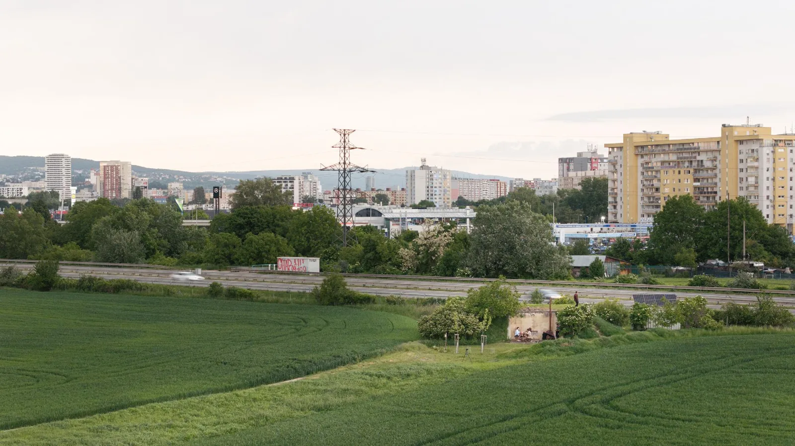
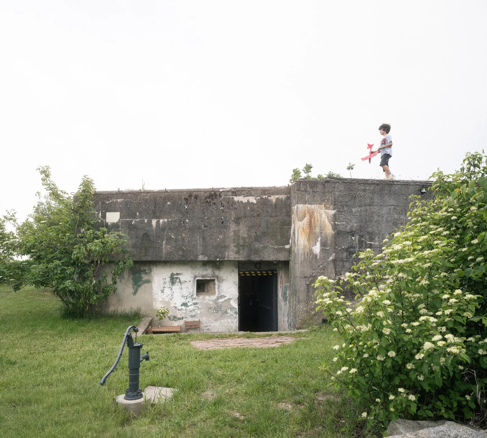
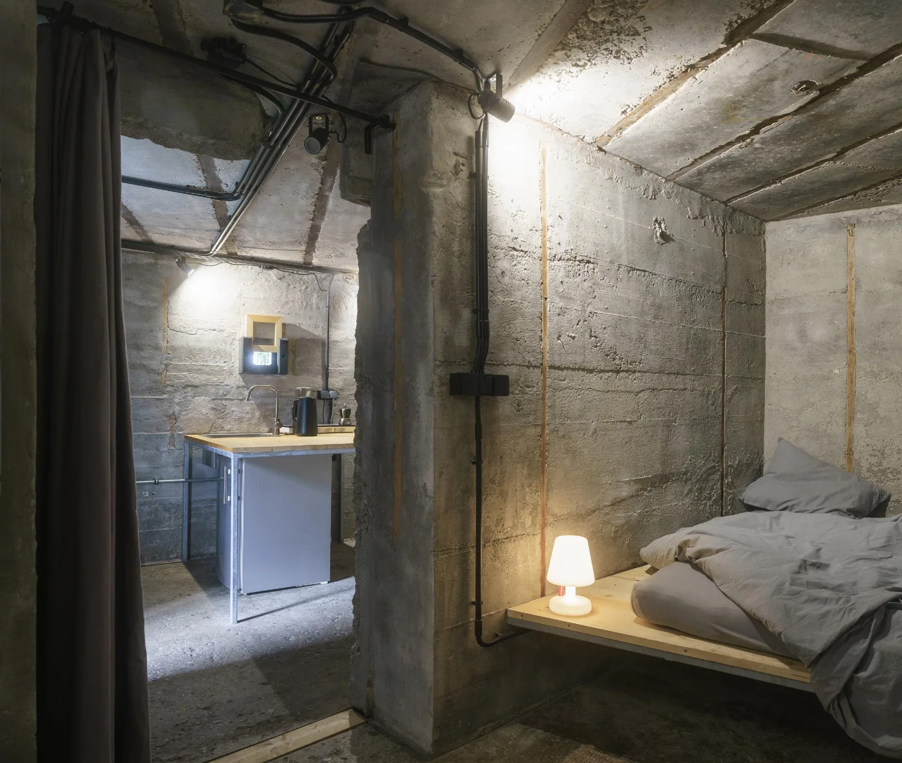
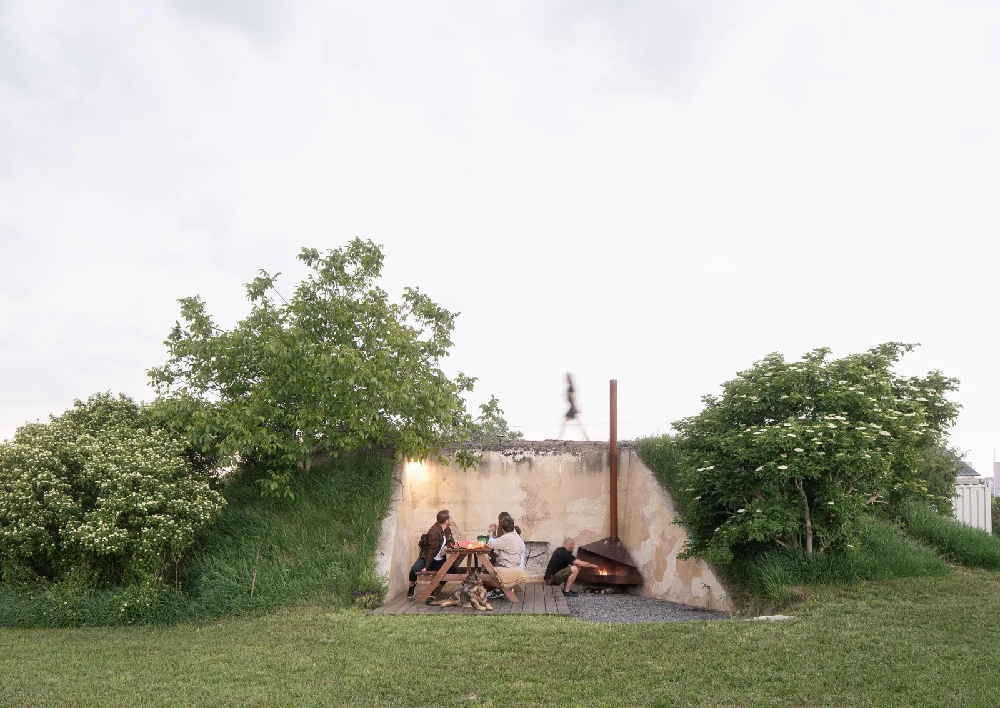
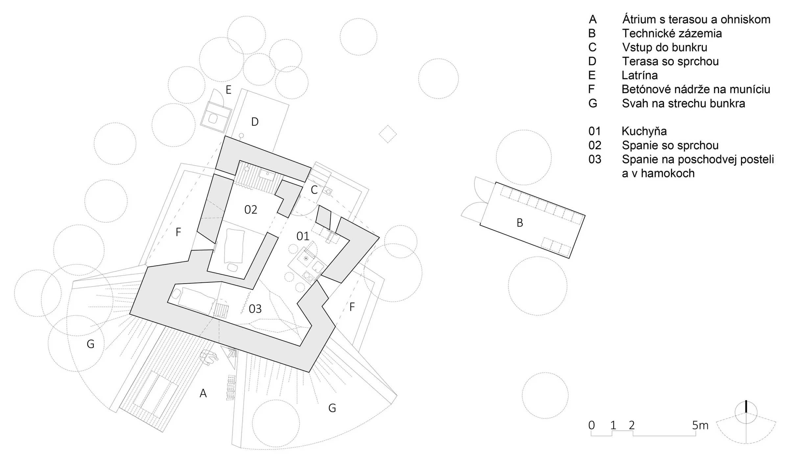
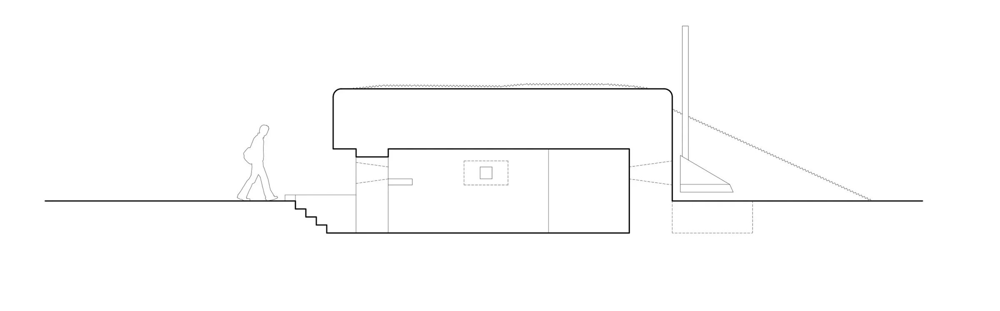

Bunker converted to accommodation · 2024
Bunker B-S10
TOITO architekti with Konduktor / Martin Kleibl
Bratislava, Slovakia
Visitors inhabit a compact former military interior fitted with sleeping platforms and a kitchen. The project extends everyday domestic use into a courtyard with a terrace and fire pit.
Instead of recreating a military interior, the architects cleaned the existing concrete and inserted simple steel-and-timber furniture. Excavation revealed a blocked firing opening and enabled a courtyard; old concrete ammunition containers were repurposed to collect greywater from the kitchen and shower.


Relevant connections
Included as an architectural reference for adaptive reuse; no mode of work is assigned.
Images and drawings / 06









